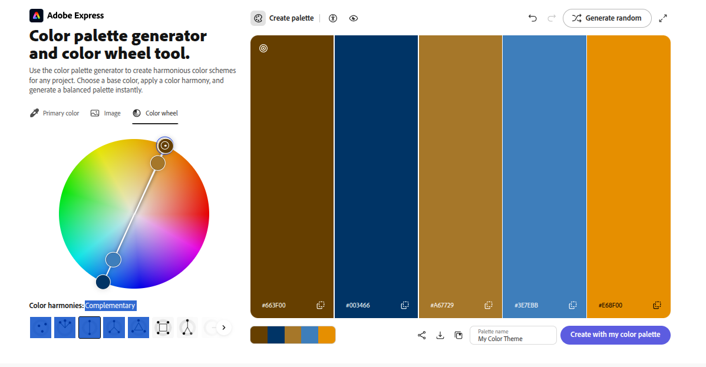
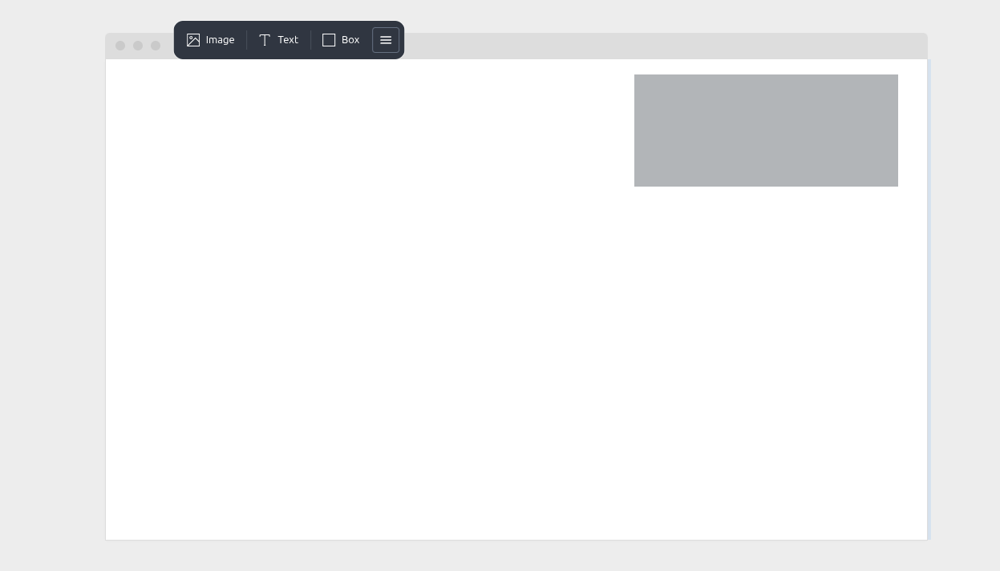

Clique aqui para voltar no inicio
Para representar cores em CSS, podemos usar diferentes métodos:
Existem várias propriedades em CSS que permitem controlar as cores dos elementos:
Uma paleta de cores é uma seleção de cores que são usadas em um projeto de design. Ela ajuda a criar uma identidade visual consistente e a transmitir a mensagem desejada. Existem várias ferramentas online que permitem criar paletas de cores, como Adobe Color, Coolors e Paletton.

Com isso, podemos criar designs mais harmoniosos e profissionais.
Para centralizar o texto em CSS, podemos usar a propriedade "text-align" com o valor "center". junto com a propriedade "margin" para centralizar horizontalmente. Exemplo:
.centralizado {
text-align: center;
margin: 0 auto;
}
Isso fará com que o texto dentro do elemento com a classe "centralizado" seja centralizado horizontalmente na página.
A tipografia é a arte e técnica de arranjar tipos para tornar a linguagem escrita legível, atraente e eficaz. A anatomia da tipografia inclui vários termos importantes:
Você pode usar o google fonts para selecionar e integrar fontes gratuitas em seu projeto. usando a <@import (linkdosite) >.
Para usar fontes externas em CSS, podemos usar a regra @import para importar a fonte desejada. Por exemplo, para importar a fonte "Roboto" do Google Fonts, podemos usar o seguinte código:
@import url('https://fonts.googleapis.com/css2?family=Roboto:wght@400;700&display=swap');
@fontface {
font-family: 'Roboto';
src: url('https://fonts.googleapis.com/css2?family=Roboto:wght@400;700&display=swap');
}
Depois de importar a fonte, podemos usá-la em nosso CSS definindo a propriedade "font-family". Por exemplo:
Em CSS, podemos usar diferentes unidades de medida para definir o tamanho dos elementos. As unidades mais comuns incluem:
Usar unidades relativas como em, rem e porcentagem pode ajudar a criar designs mais responsivos e adaptáveis a diferentes tamanhos de tela.
Com isso, para utilizar essas unidades de medida de forma eficaz, é importante entender como elas se comportam em relação ao elemento pai e ao elemento raiz. Exemplo:
.elemento {
font-size: 1.5em; /* O tamanho da fonte será 1.5 vezes o tamanho da fonte do elemento pai */
}
Isso permitirá que o design seja mais flexível e se adapte melhor a diferentes dispositivos e tamanhos de tela.
Em CSS, existem diferentes tipos de alinhamento que podem ser usados para posicionar elementos na página. Alguns dos tipos de alinhamento mais comuns incluem:
Além disso, para alinhar elementos verticalmente, podemos usar a propriedade "vertical-align" com valores como "top", "middle" e "bottom". Exemplo: "vertical-align: middle;"
Em CSS, podemos usar IDs para identificar elementos específicos na página. Um ID é um identificador único que pode ser atribuído a um elemento HTML usando o atributo "id". Por exemplo:
Conteúdo do elemento
Também tem outro tipo chamado Class que faz a identificação de elementos em conjunto. Exemplo:
Conteúdo do elemento 1
Conteúdo do elemento 2
Depois de atribuir um ID a um elemento, podemos usar esse ID para aplicar estilos específicos a ele em nosso CSS. Para selecionar um elemento por ID, usamos o símbolo "#" seguido do nome do ID. Por exemplo:
#meuElemento {
color: red;
font-size: 20px;
}
Isso fará com que o texto dentro do elemento com o ID "meuElemento" seja vermelho e tenha um tamanho de fonte de 20 pixels. É importante lembrar que um ID deve ser único em uma página, ou seja, não deve ser atribuído a mais de um elemento.
As pseudo-classes em CSS são usadas para definir um estado especial de um elemento. Elas permitem aplicar estilos a elementos com base em sua posição, estado ou interação do usuário. Algumas das pseudo-classes mais comuns incluem:
Os pseudo-elementos em CSS são usados para estilizar partes específicas de um elemento, como o primeiro caractere de um parágrafo ou o conteúdo antes de um elemento. Algumas das pseudo-elementos mais comuns incluem:
As tags de agrupamento em CSS são usadas para organizar e estilizar conjuntos de elementos. Algumas das tags de agrupamento mais comuns incluem:
A propriedade "box-shadow" em CSS é usada para adicionar sombras a elementos. Ela permite criar efeitos de profundidade e destaque em um design. A sintaxe básica da propriedade "box-shadow" é a seguinte:
box-shadow: offset-x offset-y blur-radius color;
Onde:
A propriedade "border-radius" em CSS é usada para criar bordas arredondadas em elementos. Ela permite definir o raio de curvatura das bordas, criando um efeito mais suave e esteticamente agradável. A sintaxe básica da propriedade "border-radius" é a seguinte:
border-radius: valor;
Também é possível criar um círculo ao definir o border-radius como 50%.
O planejamento de layout em CSS é uma parte fundamental do design web, pois permite organizar e posicionar os elementos da página de forma eficiente e responsiva. Usando um aplicativo chamado wireframe. Ele permite criar um esboço visual da estrutura da página, definindo a hierarquia dos elementos e a disposição geral do conteúdo. O planejamento de layout envolve considerar aspectos como a navegação, a legibilidade, a usabilidade e a estética do design. Com um layout bem planejado, é possível criar uma experiência de usuário agradável e intuitiva, facilitando a interação com o site e aumentando a satisfação do visitante.

As variáveis em CSS, também conhecidas como custom properties, são uma maneira de armazenar valores reutilizáveis em um documento CSS. Elas permitem que você defina um valor uma vez e o reutilize em vários lugares do seu CSS, facilitando a manutenção e a consistência do design. A sintaxe para definir uma variável é a seguinte:
:root {
--nome-da-variavel: valor;
}
O design responsivo é uma abordagem de design web que visa criar sites que se adaptam a diferentes tamanhos de tela e dispositivos. Ele permite que um site seja visualizado e utilizado de forma eficaz em desktops, tablets e smartphones, proporcionando uma experiência de usuário consistente e agradável em todas as plataformas. O design responsivo é alcançado usando técnicas como media queries, flexbox e grid layout, que permitem ajustar o layout e o conteúdo do site com base nas características do dispositivo do usuário.
O módulo 2 de CSS aprofundando abrangeu uma variedade de tópicos essenciais para o desenvolvimento web, incluindo cores, tipografia, alinhamento, pseudo-classes, box shadow, bordas redondas, planejamento de layout, variáveis do CSS e design responsivo. Com esses conhecimentos, os desenvolvedores podem criar designs mais atraentes, funcionais e adaptáveis a diferentes dispositivos, melhorando a experiência do usuário e a eficácia do site.